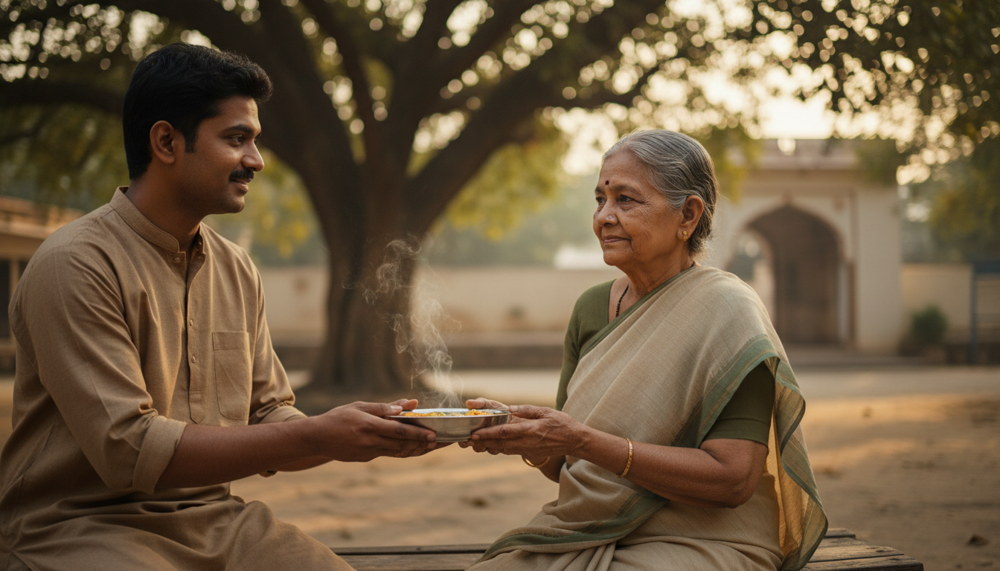
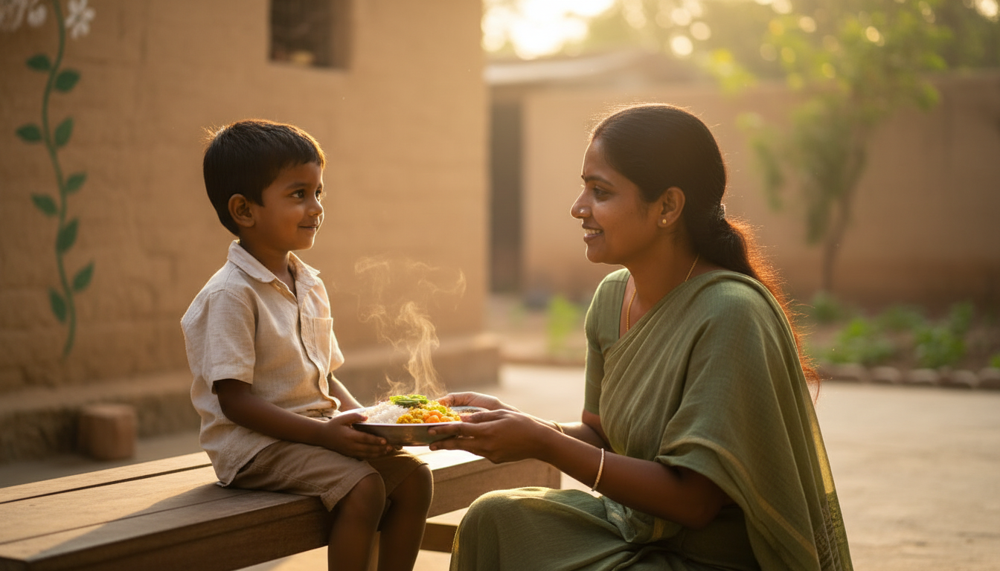
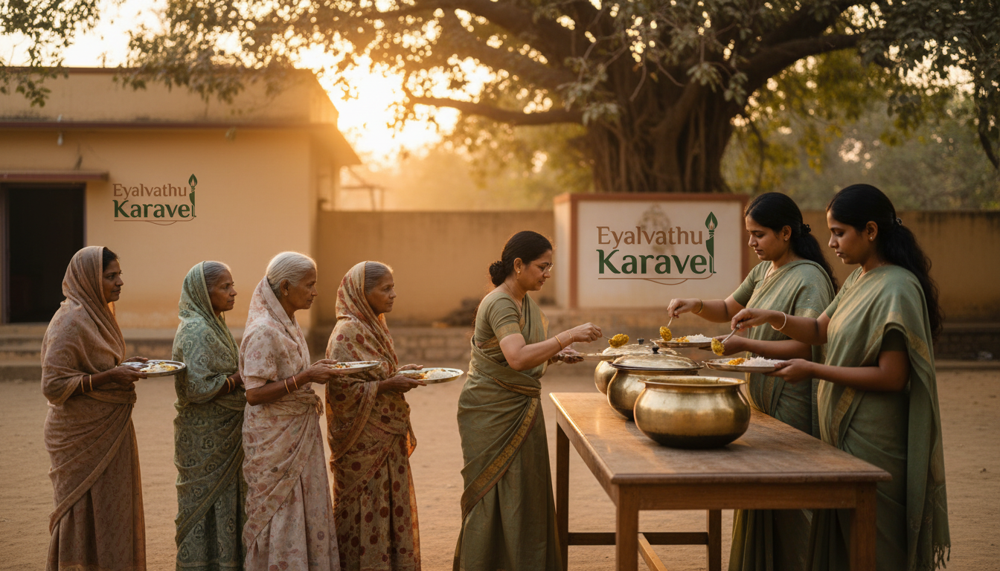
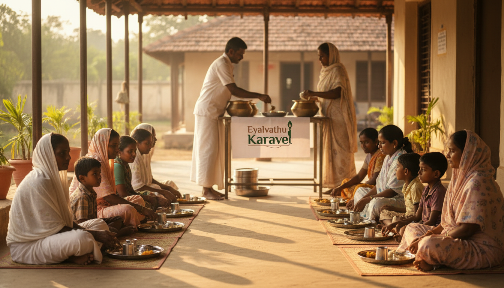

Feed a Soul — nourishing people with dignity
“Feed a Soul” is our way of naming what happens when food is shared not as charity theatre, but as steady care—warm plates, respectful hands, and communities seen in daylight.
Reliable nutrition is only part of the story. The other part is how the meal arrives: with patience in a queue, with eye contact across a bench, with volunteers who remember that hunger never belongs to a stereotype. Our distributions are documented so supporters can witness the rhythm of the work—not to perform suffering, but to show consistency, place, and presence.

In the smallest interactions, the programme shows its heart: a plate passed carefully, steam still rising, the pause before the next person steps forward. These are the moments we protect when we say we work hands-on—not as a slogan, but as a practice.

Children and elders appear in the same story because need does not sort itself by age. Where we can, we pair nutrition with learning support and honest documentation—so a meal is never an isolated gesture, but part of a longer promise the community can recognise week after week.

Wider gatherings bring the organisation into view: rows seated in good order, cooks at the centre, the work visible rather than hidden. When our name appears beside the food table, it is a pledge that the effort is real, repeated, and accountable—not a one-off photograph, but a chapter in an ongoing record we invite you to explore in the gallery and stories on this site.

We are still completing formal registration for the trust; public donations are not open yet. If your heart is already with this work, the homepage “Feed a Soul” section explains how you can leave an expression of interest for the future—and we are grateful for every message that says you believe in feeding souls, not just filling frames.
Return to Feed a Soul on the homepage · Read current registration status